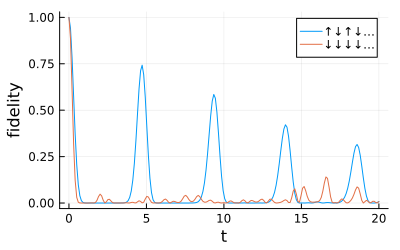
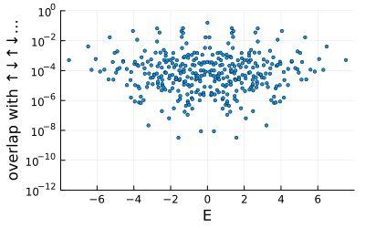

Krylov fragments and quantum many-body scars
Some Hamiltonians split the space into blocks that no quantum number labels. fragment finds the block containing given basis states, by following the nonzero matrix elements of the Hamiltonian from them.
using FermionicHilbertSpaces, LinearAlgebra, PlotsThe PXP model
Rydberg atoms in the blockade regime are described by the PXP chain
\[H = \sum_k P_{k-1} X_k P_{k+1},\]
where $X_k$ flips atom $k$ and $P_k$ projects it onto the ground state $|{\downarrow}\rangle$. An atom can only flip when its neighbours are in the ground state.
@spins S 1 // 2N = 12Hfull = hilbert_space(S, 1:N)P(k) = 1 // 2 - S[k][:z]X(k) = 2S[k][:x]pxp = X(1) * P(2) + sum(P(k - 1) * X(k) * P(k + 1) for k in 2:(N - 1)) + P(N - 1) * X(N)H = fragment(pxp, Hfull, ["↓"^N])dim(H), dim(Hfull)(377, 4096)The fragment of the state with all atoms in the ground state is the space without neighbouring excited atoms, which a constraint on the basis states also gives. For the PXP model, fragment gives no new information.
no_neighbours(m) = !any(k -> m[k] > 0 && m[k + 1] > 0, 1:(N - 1))blockade = FilterConstraint(m -> no_neighbours(collect(m)); maps = s -> s.m, spaces = factors(Hfull))@assert basisstates(H) == basisstates(constrain_space(Hfull, blockade))Single terms of the Hamiltonian, such as $X_1 P_2$, map states of the fragment outside it, while their sum does not. projection = true drops those matrix elements.
ham = representation(pxp, H, Matrix; projection = true)E, V = eigen(Hermitian(ham));Scars
A quench from the Néel-like state $|{\uparrow\downarrow\uparrow\downarrow\cdots}\rangle$ shows revivals of the fidelity, while the state with all atoms in the ground state relaxes.
ts = range(0, 20; length = 200)basis_vector(label) = (ψ = zeros(dim(H)); ψ[state_index(label, H)] = 1; ψ)function fidelity(label) c = V' * basis_vector(label) [abs2(sum(abs2.(c) .* exp.(-im * E * t))) for t in ts]endneel = "↑↓"^(N ÷ 2)plot(ts, fidelity(neel); label = "↑↓↑↓…", xlabel = "t", ylabel = "fidelity", size = (400, 250))plot!(ts, fidelity("↓"^N); label = "↓↓↓↓…")
The revivals come from a tower of eigenstates at nearly equally spaced energies, the quantum many-body scars, which overlap much more with the Néel-like state than the other eigenstates do.
overlap = abs2.(V' * basis_vector(neel))scatter(E, overlap; yscale = :log10, ylims = (1e-12, 1), label = false, ms = 2, xlabel = "E", ylabel = "overlap with ↑↓↑↓…", size = (400, 250))
Fragmentation from dipole conservation
The pair-hopping chain
\[H = \sum_k S^+_k S^-_{k+1} S^-_{k+2} S^+_{k+3} + \mathrm{h.c.}\]
conserves the charge $\sum_k S^z_k$ and the dipole moment $\sum_k k S^z_k$. These do not label all its blocks: states with the same charge and dipole moment lie in fragments of very different sizes, and many are frozen.
pairhop = sum(S[k][:+] * S[k + 1][:-] * S[k + 2][:-] * S[k + 3][:+] for k in 1:(N - 3)) + hcdim(fragment(pairhop, Hfull, ["↑↓↑↓↑↓↓↑↓↑↓↑"])), dim(fragment(pairhop, Hfull, ["↑↑↑↓↓↓↓↓↓↑↑↑"]))(20, 1)The sector with vanishing charge and dipole moment splits into these fragments:
charge(m) = sum(m)dipole(m) = sum(k * m[k] for k in eachindex(m))neutral = FilterConstraint(m -> (m = collect(m); charge(m) == 0 && dipole(m) == 0); maps = s -> s.m, spaces = factors(Hfull))remaining = Set(basisstates(constrain_space(Hfull, neutral)))sizes = Int[]while !isempty(remaining) F = fragment(pairhop, Hfull, [first(remaining)]) setdiff!(remaining, basisstates(F)) push!(sizes, dim(F))endsort!(sizes; rev = true)23-element Vector{Int64}:
20
5
5
3
3
3
3
1
1
1
⋮
1
1
1
1
1
1
1
1
1This page was generated using Literate.jl.